地政学
キャンベラはシドニーとメルボルンの中間に置かれた連邦首都で、議会、官庁、裁判所、外交団、防衛機関を集めます。国内政治とインド太平洋外交を静かに結ぶ要衝です。豪州の制度を映す街です。象徴性が濃いです。
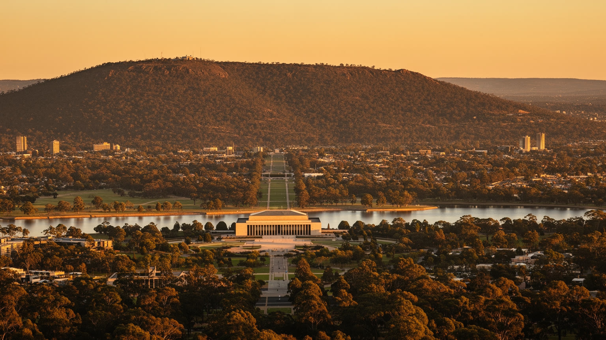
🇦🇺 オーストラリア / オセアニア / World City Atlas
議会、外交、公共サービス、大学、防衛、湖と丘陵、先住民の記憶、住宅、交通、博物館が重なるオーストラリアの計画首都です。
都市の骨格
キャンベラは連邦政治の舞台であると同時に、湖畔の散歩、大学、住宅地区、外交団地、防衛施設、国立文化機関が日常を作る内陸都市です。
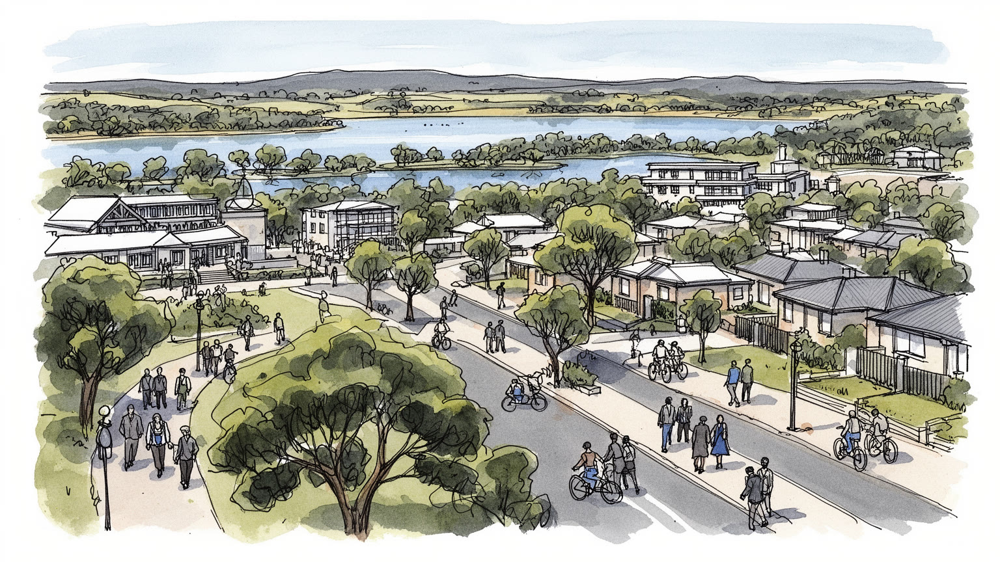
キャンベラはシドニーとメルボルンの中間に置かれた連邦首都で、議会、官庁、裁判所、外交団、防衛機関を集めます。国内政治とインド太平洋外交を静かに結ぶ要衝です。豪州の制度を映す街です。象徴性が濃いです。
雇用の柱は公共行政、防衛、大学、研究、医療、専門サービス、観光です。安定した白襟職の印象の下で、清掃、警備、介護、飲食、建設、配送、学生労働も都市を支えています。政策の街も労働の街です。支えは広いです。
国立博物館、戦争記念館、美術館、図書館、大学、移民コミュニティ、教会、モスク、寺院が重なります。ングナワルとンガンブリの土地としての記憶も、儀礼と教育に関わります。静かな街に多層の文化が宿ります。
旅行者は湖、議事堂、博物館、丘陵展望、ワイナリーを巡ります。住民には住宅費、車依存、寒暖差、山火事煙、若者の夜の選択肢、公共交通の薄さが日常の課題になります。余白の多さと距離が同居する首都です。今も。
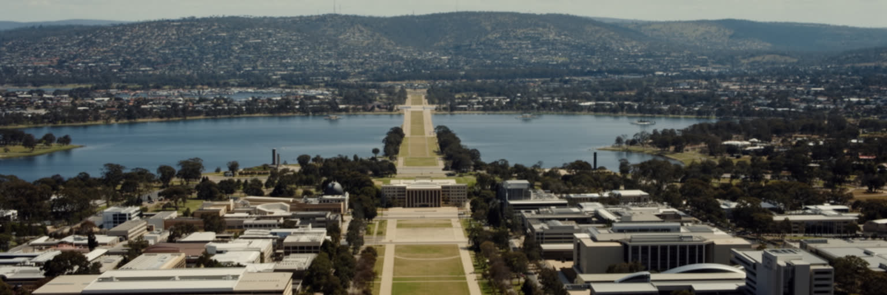
キャンベラは、シドニーとメルボルンの競合を調停するために選ばれた内陸の首都です。妥協の産物という説明だけでは、この都市の意味は小さく見えます。連邦成立後の新国家は、既存の港湾商都に政治の中心を置かず、意図的に新しい行政空間を作りました。ウォルター・バーリー・グリフィンとマリオン・マホニー・グリフィンの構想は、湖、丘陵、軸線、三角形の道路配置を使い、制度を景観に翻訳しました。都市の中心は高層ビルの密集ではなく、議会、戦争記念館、湖、広い芝生、官庁群の距離で成り立ちます。距離のある設計は威厳と見通しを生む一方、歩行者には空白が長く、日常のにぎわいを作りにくいです。首都の景観は、国家の透明性と秩序を示す舞台であると同時に、自動車移動を前提にした広がりでもあります。丘から眺める都市は整って見えますが、その整い方は政治的な選択の結果です。さらに計画の理想は、後に成長した郊外、大学、商業地区、ライトレールによって修正され続けています。中心軸の厳格さと、住民が買い物や通勤で使う柔らかな生活圏は必ずしも一致しません。週末の市場、学校送迎、学生の移動、博物館帰りの家族は、記念碑的な都市軸とは別の地図を作ります。空間の余白は、国家の舞台であり生活の回り道でもあります。キャンベラを読むことは、国が自分の中心をどう見せたいか、そして市民がその空間をどう使い直しているかを読むことでもあります。
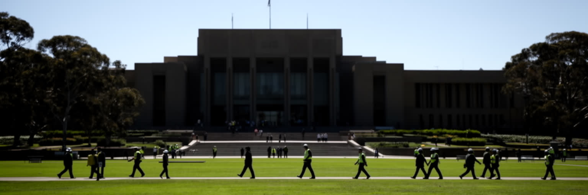
キャンベラの経済と時間は、議会、各省庁、裁判所、規制機関、政策研究、ロビー活動によって大きく動きます。会期中には議員、官僚、記者、業界団体、労組、非営利団体、地方政府の代表が集まり、ホテル、飲食、タクシー、警備、イベント会場の需要も変わります。公共サービスの雇用は安定をもたらすが、政権交代、予算削減、委託、デジタル化、在宅勤務は職場の配置を変えます。政策を作る街であるほど、実際の生活者の声をどう拾うかが問われます。移民、先住民、障害者、地方都市、農業、資源、福祉、防衛、気候の問題は、会議室の資料だけで完結しません。庁舎の清掃、食堂、警備、保守、資料整理、翻訳、IT運用も、政治を日々動かす労働です。大使館地区や防衛機関も行政の日常に近く、外交官、軍関係者、通訳、研究者、家族の転勤が住宅市場や学校に影響します。政策発表の日には全国の注目が集まりますが、翌朝の街では保育、通勤、家賃、病院予約が変わらず続きます。官庁の廊下で決まる制度は、遠い州や島嶼地域の暮らしにも及ぶため、都市は全国の現実を受け止める責任を持ちます。国家の中心に見える街にも、非正規雇用や生活費の不安はあります。キャンベラを行政都市として見るなら、議事堂の建築美だけでなく、制度を支える職場、会期のリズム、政策が住民の生活へ戻ってくる経路を追う必要があります。
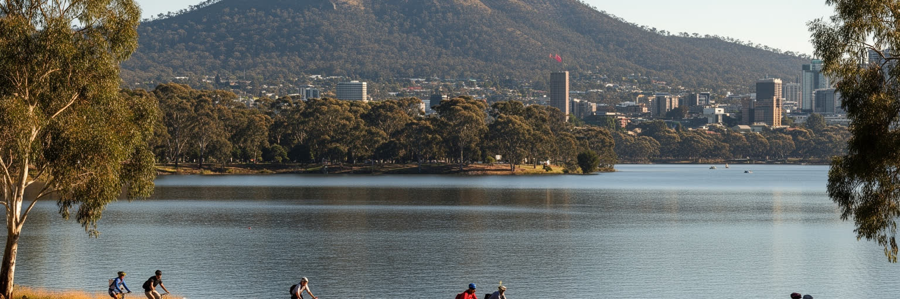
キャンベラの景観は、バーリー・グリフィン湖と周囲の丘陵によって強く方向づけられています。湖は自然の大河ではなく、モロングロ川をせき止めて作られた都市の中心水面で、議会三角地帯、国立文化施設、公園、ボート、サイクリング、散歩道を結びます。マウント・エインズリー、ブラック・マウンテン、レッド・ヒルからは、道路の軸線と建物の配置が読み取れます。水と緑の余白は、キャンベラに「ブッシュキャピタル」という印象を与え、生活に近い野鳥、ユーカリ、乾いた草地、朝霧をもたらします。一方で、広い緑地は管理、水質、外来種、火災リスク、夜間の暗さ、移動距離の問題も伴います。湖畔の美しさは観光の中心ですが、都市の排水、気候変動、洪水、干ばつへの備えを抜きには語れません。水辺の公園は民主的な余暇の場に見えますが、寒い朝、強い日差し、暗い帰路、駐車場の位置によって使いやすさは変わります。水質を保つ仕事、草地を管理する仕事、倒木や火災危険を点検する仕事も、この景観の裏側にあります。湖で遊ぶ家族、通勤する自転車、早朝に走る公務員が、儀礼の軸を日常の道に変えていきます。丘陵は展望台であると同時に、先住民の土地の記憶、軍事記念、通信、自然保護の場でもあります。キャンベラでは、景観の余白が都市の装飾ではなく、政治、記憶、余暇、防災を同時に支える骨格になっています。
キャンベラは行政都市であると同時に、大学と研究機関の都市でもあります。オーストラリア国立大学、キャンベラ大学、国防大学、科学機関、政策研究所、国立図書館や公文書館が近接し、学生、研究者、官僚、外交官、技術者が交わります。小さな都市圏に高度な知識機関が集まるため、政治と研究の距離は近いです。気候、先住民政策、アジア太平洋研究、防衛、公共経済、天文学、医療、データ科学の議論が、講義室から省庁、国際会議、メディアへ流れます。留学生は街に多言語の生活をもたらし、賃貸住宅、アルバイト、交通、食文化を変えます。一方で、学費、家賃、孤立、ビザ、研究資金の不安は学生と若手研究者を圧迫します。大学の成功は都市の知名度を高めるが、キャンパス周辺の住宅費と短期滞在需要も押し上げます。図書館、実験室、学生相談、清掃、警備、食堂、IT支援の仕事も知識都市を支える基盤です。キャンパスの国際性は、週末の市場、礼拝所、学生向け住宅、深夜のアルバイトにも広がります。政策都市の近くにいることは、研究成果が制度に届きやすい利点を持つが、独立性と批判性も同時に求められます。研究都市としての実力は、論文や政策提言だけでなく、学生が安心して住み、地域の学校や市民が知識へアクセスできるかにも表れます。キャンベラの静かな知性は、公共性と生活条件の両方で試されます。
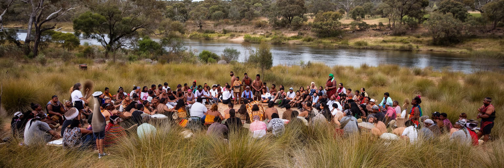
キャンベラを首都としてだけ見ると、都市の時間は二十世紀初頭から始まったように見えます。しかしこの地域は、ングナワル、ンガンブリをはじめとする先住民の土地として、はるかに長い関係を持ってきました。谷、川、湿地、丘、動植物、移動の道、季節の知識は、現在の道路や芝生の下に消えたのではなく、儀礼、地名、教育、土地権、文化財保護、芸術の中で続いています。連邦首都の建設は、近代国家の理想を掲げながら、植民地化による土地の喪失、暴力、病気、移動制限、家族分離の歴史の上に置かれました。国立博物館やギャラリー、記念行事で先住民の文化を学べることは重要ですが、展示の対象にとどめるだけでは足りません。学校の授業、公共式典、観光案内、都市開発の説明で、誰の土地として語るかも日常の政治です。湖畔や丘陵を歩く時、その風景は国の首都である前に、長い関係が続いてきた土地です。観光客が写真に収める展望にも、地名の由来、通行の記憶、失われた場所への痛みが重なります。文化を敬う姿勢は、案内板や式典だけでなく相談と共同管理にも表れます。開発、河川管理、教育、医療、住宅、司法、文化財の扱いに先住民の声が実質的に反映されるかが問われます。首都で行われる土地承認の言葉は、政策と予算に結びついて初めて力を持ちます。キャンベラの公共性は、国家の制度と最初の住民の関係をどう作り直すかによって測られます。
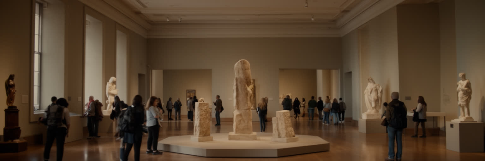
キャンベラには、国立博物館、国立美術館、国立図書館、国立公文書館、戦争記念館、造幣局、科学施設など、国家の記憶を保存し編集する機関が集まります。旅行者にとっては数日で巡れる文化施設群ですが、そこで扱われる内容は、移民、戦争、先住民、環境、民主主義、スポーツ、芸術、技術、日常生活まで広いです。展示は中立な倉庫ではなく、何を中心に置き、何を周縁に置くかという公共的な判断を含みます。戦争記念館では犠牲と軍事史を学ぶ一方、平和、植民地戦争、退役軍人のケア、現代の作戦をどう語るかが問われます。美術館や博物館は観光資源であると同時に、学校教育、研究、地域イベント、先住民アーティスト、修復、収蔵、警備、清掃、案内の労働で成り立ちます。家族連れの休憩場所、触れる展示、多言語解説、障害者アクセスも公共文化の質を左右します。収蔵庫の温湿度管理やデジタル公開は、表から見えにくいが記憶を未来へ渡す作業です。展示の更新は、社会の価値観が変わるたびに公共機関が説明責任を負うことも意味します。批判を受け止める姿勢も文化機関の信頼を支えます。無料公開や低料金は公共性を支えますが、予算や政治的圧力に左右される面もあります。キャンベラの文化機関を歩くことは、国家が自分の過去をどう説明し、どんな未来を市民と共有しようとしているかを読む行為でもあるのです。
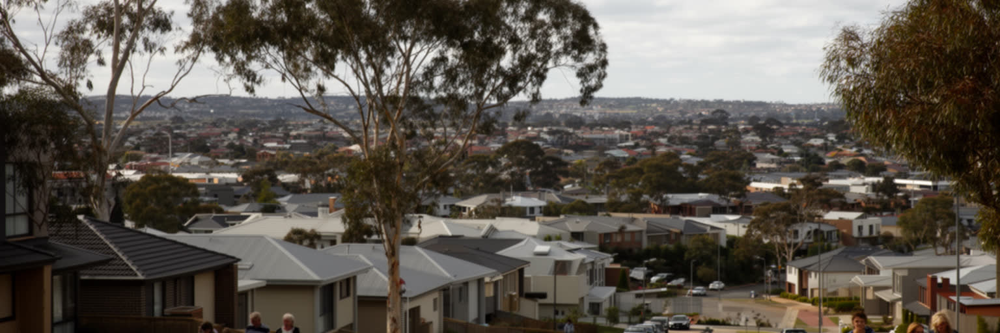
キャンベラの暮らしは、計画された地区構成と住宅費の高さによって大きく左右されます。中心部、内側郊外、大学周辺、湖畔、タウンセンター、外縁の新興住宅地には、それぞれ異なる通勤時間、家賃、学校、買い物、緑地への距離があります。所得水準の高い公共部門の街という印象は強いが、若い世帯、学生、単身者、移民、介護や飲食で働く人には家賃が重く、シェアハウスや遠い郊外を選ばざるを得ない場合があります。戸建て住宅と庭の余裕は魅力ですが、低密度の広がりは車依存、公共交通の薄さ、維持費、暖房費、冷房費を増やします。近年は中心部やタウンセンターで集合住宅も増え、都市らしい密度が生まれつつありますが、高層化や駐車、日照、緑地、コミュニティ継続をめぐる議論も続きます。冬の寒さと夏の日差しは、断熱の弱い家では光熱費と健康の問題になります。単身高齢者や障害者にとっては、家の中の快適さだけでなく、近くに買い物と医療があるかも大きいです。子育て世帯には学校区、保育、放課後の移動、スポーツ施設への距離も住む場所を決める条件になります。庭の広さは魅力ですが、維持できる時間と費用も問われます。公営住宅の配置、ホームレス支援、断熱改修、災害時の避難、賃貸契約の安定は、首都の公平性を測る基準です。キャンベラの住みやすさは、広い空と木立だけでなく、働く人が無理なく住めるかで決まります。
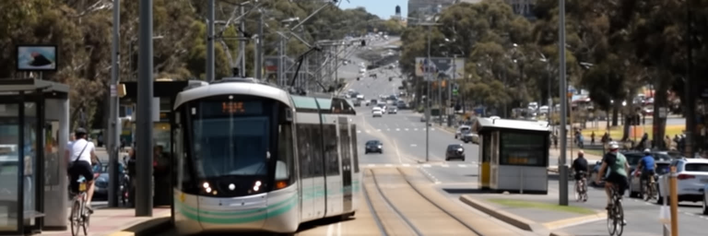
キャンベラは眺めると整った都市ですが、暮らすと距離の都市でもあります。広い道路、分離された住宅地区、湖と緑地、官庁街の余白は、景観の秩序を作る一方で、徒歩だけではつながりにくい日常を生みます。自動車は長く主要な移動手段であり、タウンセンター、学校、職場、病院、買い物を結んできました。近年はライトレールが中心部と北部を結び、今後の延伸も都市の密度と生活圏を変える可能性を持ちます。ですがバスの本数、夜間の移動、駅や停留所までの距離、障害者や高齢者のアクセス、冬の寒さと夏の日差しは、公共交通利用の現実を左右します。自転車道や湖畔の歩行空間は質が高いが、通勤や買い物の全てを代替できるわけではありません。観光客にとっても、施設間の距離と運行本数は旅の印象を変えます。学生や若い労働者には、車を買う前の移動手段が暮らしの自由を決めます。空港、州境を越える道路、シドニー方面への移動も、首都の閉じた日常を外へ開きます。停留所の屋根や歩道の連続性も、寒暖差のある街では小さな福祉になります。交通政策は気候対策、住宅供給、若者の自立、観光の回遊性とも結びつきます。議会都市としてのキャンベラが公平な日常を作るには、車を持たない人、夜勤の労働者、学生、観光客が安心して移動できる網を太くする必要があります。首都の余白は美徳であると同時に、移動の負担としても現れます。
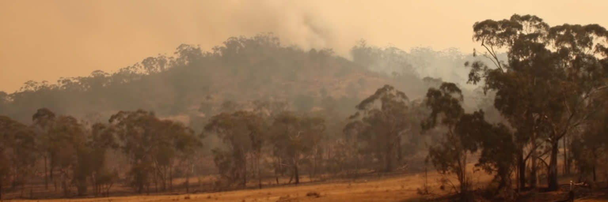
キャンベラの気候は、内陸高地らしい寒暖差を持ちます。夏は乾いて暑く、冬は霜が降りるほど冷え、朝晩の空気は澄みます。四季の明瞭さは生活の魅力ですが、気候変動の下では熱波、干ばつ、激しい雨、山火事煙が大きな課題になります。周囲に森林、草地、国立公園、低密度住宅地があるため、火災は遠い山の出来事ではありません。大規模火災の煙は学校、屋外スポーツ、通勤、呼吸器疾患、観光、在宅勤務に影響し、空気質の情報と避難の判断が日常へ入り込みます。住宅の断熱、冷暖房、屋根や樹木の管理、排水、停電対策、保険料、緊急警報の多言語化は、景観の美しさと同じくらい重要です。夏の強い日には、木陰や水飲み場、涼める図書館が生活インフラになります。火災後の修復、野生動物の保護、道路の再開、観光回復も長い課題として残ります。煙の日に在宅勤務できる人と屋外で働く人の差は、気候リスクが労働条件にも関わることを示します。子どもの屋外活動や高齢者の通院も、空気質と暑さの影響を受けます。湖と緑地は都市を冷やし、余暇を支えますが、水資源と生態系の管理を必要とします。備蓄や近所の連絡網も支えになります。公共施設が暑さや煙の日の避難先になるか、低所得世帯が安全な住宅に住めるかも公平性の問題です。キャンベラの澄んだ空は魅力ですが、その空を守るには防災、気候政策、住宅政策を一体で考える必要があります。
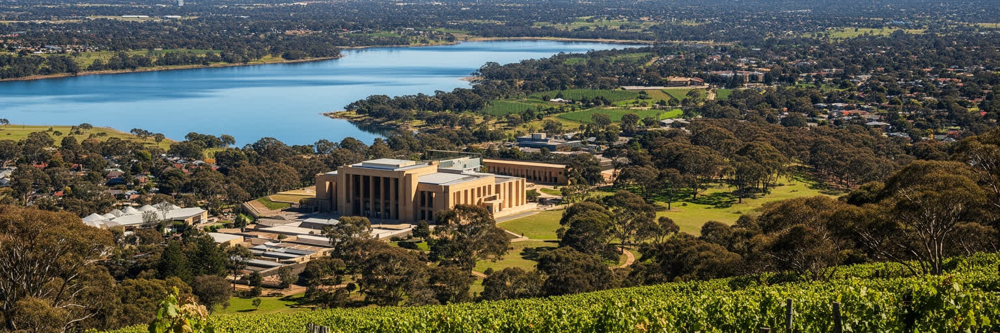
キャンベラ観光の中心は、国会議事堂、旧国会議事堂、戦争記念館、国立美術館、国立博物館、国立図書館、造幣局、湖畔の公園です。大都市の繁華街を歩く旅とは違い、施設ごとの距離を移動しながら、政治、戦争、先住民、移民、自然、芸術を学ぶ旅になります。マウント・エインズリーの展望、ブラック・マウンテン、国立樹木園、フロリアード、バルーンイベント、近郊ワイナリー、ナマジ国立公園は、首都と自然を近づけます。観光客には静かで知的な都市に見えますが、週末や会期、学校休暇には宿泊費や交通需要が変わります。文化施設の無料性、案内の分かりやすさ、子ども連れや高齢者の移動、車を持たない旅行者の動線は、観光の質を左右します。小さな飲食店、市場、近郊農家、ホテル清掃、ガイド、バス運転手も観光を支えます。冬の朝や夏の午後には、屋内展示と屋外散策の組み合わせ方が旅の快適さを変えます。国の歴史を学ぶ旅であるほど、展示室の外で土地の風や郊外の生活を感じる時間も大切になります。日程に余白を持つほど、湖畔の静けさや近郊の農村景観が見えてきます。キャンベラは派手な娯楽で人を圧倒する都市ではありません。時間をかけて展示を読み、湖畔を歩き、丘から都市軸を眺めることで、国家の仕組みと土地の記憶が少しずつ見えてきます。近郊の自然や農産物も含めて、首都は学びと余暇の広域圏として機能しています。
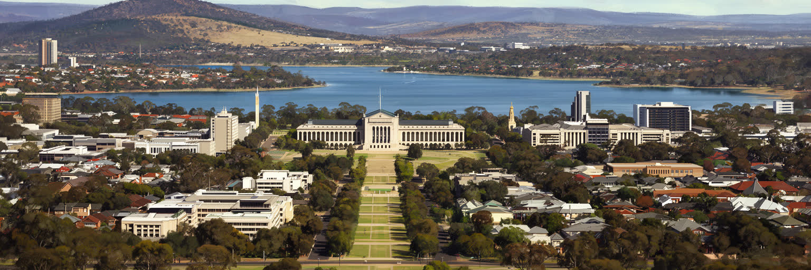
キャンベラは、計画首都、官庁街、博物館の街として単純化されやすいです。その印象は一部正しいが、都市を十分には説明しません。議会と省庁の周囲には、大学、病院、防衛、外交団、先住民の記憶、移民コミュニティ、住宅市場、ライトレール、郊外の買い物、火災煙への備えが重なっています。中心の広い芝生や湖畔の静けさは、国家の秩序を見せる舞台である一方、歩くには遠く、車を持たない人には不便な空間にもなります。公共サービスの高い所得は都市を安定させるが、家賃、学生生活、サービス労働の賃金格差も生みます。国立文化機関は記憶を保存するが、何を語り、何を語らないかを常に問われます。丘から見る整った都市軸の下には、最初の住民との関係、政策に影響される地方の暮らし、国際安全保障の判断が隠れています。さらに、静かな街の評価は、若者が残れる仕事と住まい、車に頼らない移動、夜の安全、気候リスクへの備えで変わります。国家を代表する場所だからこそ、日常の不便や格差も公共的な問題として見えやすいです。首都の価値は、象徴が美しいことだけでなく、制度を支える人びとが尊重されることにもあります。キャンベラを読むには、議事堂の象徴性と住宅地の朝、外交の緊張と湖畔の散歩、博物館の展示と清掃員の夜勤を同じ都市の中に置く必要があります。静かな首都は、制度と生活の距離を測るための都市です。